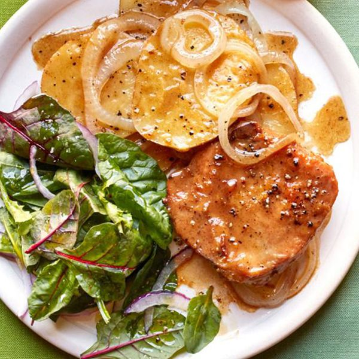

Skillet Pork Chops with Potatoes and Onion

Introduction
A great cold-weather dish that takes little prep time and yields tender chops.
Ingredients
- 2 tablespoons vegetable oil
- 4 pork chops (1/2 inch thick), trimmed
- 2 tablespoons all-purpose flour
- 1/3 cup grated Parmesan cheese
- 1/2 teaspoon salt
- 1/4 teaspoon pepper
- 4 Yukon Gold potatoes, thinly sliced
- 2 medium onions, sliced
- 3 cubes beef bouillon
- 3/4 cup hot water
- 1 tablespoon lemon juice
Steps
- Heat oil in a large skillet over medium heat. Coat the pork chops with flour, and place them in the skillet. Brown about 4 minutes on each side.
- In a small bowl, mix the Parmesan cheese, salt, and pepper. Sprinkle 1/2 of the Parmesan cheese mixture over the pork chops. Layer the chops with the potatoes, sprinkle with the remaining Parmesan cheese mixture, and top with onion slices.
- In a small bowl, dissolve the beef bouillon cubes in hot water, stirring to ensure they are fully dissolved. Stir in the lemon juice. Pour the mixture over the layered pork chops.
- Cover the skillet, reduce the heat, and simmer for 40 minutes, until the vegetables are tender and the pork chops have reached an internal temperature of 145°F (63°C).
Home